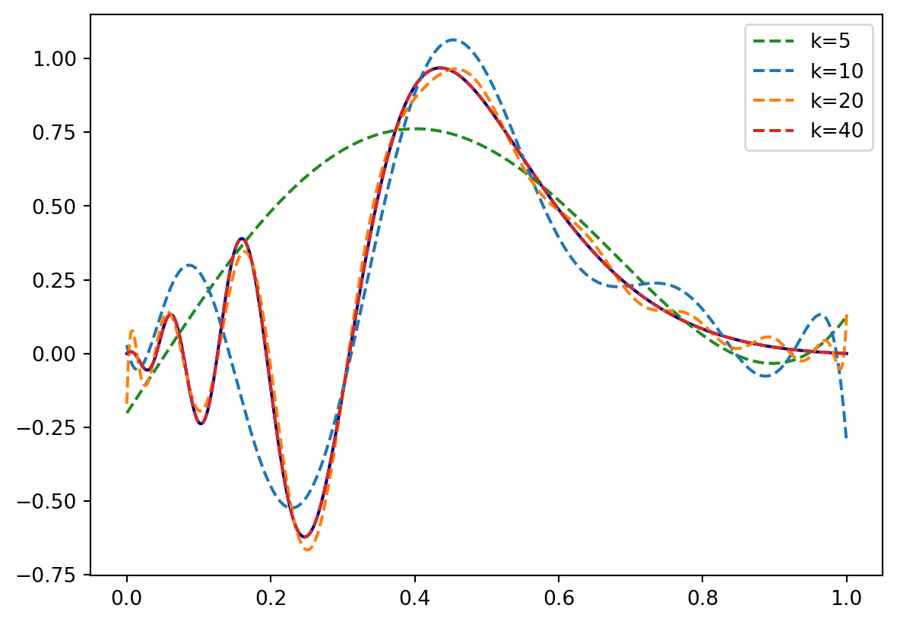

import numpy
import scipy
class LegendreBasisFunction:
def __init__(self, k, *args, **kwargs):
self.k = k
def __call__(self, x, *args, **kwargs):
x = 2*x-1
N = numpy.sqrt((2.0*self.k+1.0))
return N*scipy.special.legendre(n=self.k)(x)What is Multiresolution Analysis
Part 1: A first glimpse with hands-on examples.
- Legendre polynomials as basis
- Scaling functions
- shifting, rescaling, integration
In the following, we will explore how to use Legendre polynomials as a basis for functions in \({L}^2\left(\left[0,1\right]\right)\) - the Hilbertspace of square-integrable functions on the interval \([0,1]\). From this, it is only a minor step to represent functions on an arbitrary interval \([a,b]\) by shifting and rescaling and a bit more technical development for hypercubes \([a,b]^d\).
Within my (research)[research.qmd], I often use MRA to describe electronic wavefunctions such as orbitals (\(f \in L^2\left(\left[a,b\right]^3\right)\) - see for example here) and pair functions (\(f \in L^2\left(\left[a,b\right]^3\right)\) - see for example here). In this context, my MRA codebase of choice is madness - a high-performance c++ library. In this post, we will, however, use simple python code to illustrate the basic principles of an MRA representation.
Defining the Basis
The Legendre polynomials \(P_k(x)\) are a system of orthogonal and complete functions on \([-1,1]\). Hence, we can use them as a basis on \([0,1]\) and approximate any function on that interval as a linear combination of a finite subset \(P_k\).
To be consistent with some of the literature listed below, we will rescale the polynomials to the unit interval \[ \tilde{P}_k(x) = \sqrt{2k+1} P_k\left(2x-1\right) \] where the prefactor ensures normalization. We can define this as small class in python code:
All that is left know to approximate a function \(f \in L^2\left(\left[0,1\right]\right)\) as \[ f \approx \sum_k c_l \tilde{P}_l(x) \quad c_l = \int_0^1 f(x)P_l(x) \operatorname{d}x \] is to compute the coefficients \(c_k\).
Integration
When using the polynomials as basis it is convenient to employ Gauss-Legendre quadrature for integration \[ \langle f \vert g \rangle = \int_0^1 f(x)g(x) \operatorname{d}x \approx \sum_i wᵢ f(xᵢ)g(xᵢ) \] where wᵢ and xᵢ are the points and wheights of the quadrature (we can conveniently import them from scipy). In code this looks like:
def integrate(f,order,a=0,b=1, verbose=False):
"""
integrate in interval [a,b] subset to [0,1]
"""
x, w = scipy.special.roots_legendre(n=order+1)
# change of interval
x = (b-a)/2*x + (a+b)/2
N = (b-a)/2
y = N*f(x)
return numpy.sum(w*y)
# convenient for inner product integrals
def inner(f,g,order,a=0,b=1):
return integrate(lambda x: f(x)*g(x), order=order, a=a, b=b)where we already included the quadrature on arbitrary intervals \([a,b]\).
Let’s test if everything works by checking orthonormality of our basis
Code
kmax = 5
out = ""
for k1 in range(kmax):
f1 = LegendreBasisFunction(k=k1)
for k2 in range(k1+1):
f2 = LegendreBasisFunction(k=k2)
ip = inner(f1,f2,order=max(k1,k2))
out += "{:+2.3f}".format(ip)
out += "\n"
print(out)+1.000
+0.000+1.000
+0.000+0.000+1.000
-0.000-0.000-0.000+1.000
-0.000-0.000-0.000-0.000+1.000
Looks good so far!
Example
Let’s represent some function with the Polynomial basis we have constructed above. We will use the function \[ f(x) = \sin\left( e^{-3.0*\left(2x-1\right)} \right)\frac{\sin\left(2x-1\right)}{2x-1}. \] It looks like
Code
def f(x):
x = 2*x-1
a= numpy.exp(-10*(x+0.5)**2)
b= numpy.sinc(x)
return numpy.sin(numpy.exp(-3.0*(x)))*b
import matplotlib.pyplot as plt
x = numpy.linspace(0.0,1.0,500)
fx = f(x)
plt.plot(x,fx, color="navy")
plt.show()We can create the function in the basis of our rescaled Legendre Polynomials up to order \(k\) as \[ f(x) = \sum_{l=1}^{k} c_l \tilde{P}_l(x), \quad c_l = \langle f \vert \tilde{P}_l \rangle. \] and compute the coefficients with our Gauss-Legendre integration function defined above.
We will do this by defining the class ProjectedFunction
class ProjectedFunction:
def __init__(self, f, k=1):
assert k>0
self.k = k
# initialize basis functions
self.basis = [LegendreBasisFunction(k=kk) for kk in range(k)]
# compute the coefficients in the legedre basis
# by computing the integral via Gauss-Legedre Quadrature
self.coeffs = [inner(f,self.basis[n],order=k) for n in range(k)]
def __call__(self, x, *args, **kwargs):
y = [self.coeffs[n]*self.basis[n](x) for n in range(self.k)]
return sum(y)This class projects a given function f onto the basis spanned by \(P_l(x)\) with \(l\leq k\) - more formally we have an implementation of \[
\text{span}\left\{ \tilde{P}_l \right\}_{l=1}^{k} \subset {L}^2\left(\left[0,1\right]\right).
\]
Through the __call__ operator we can use initialized objects of ProjectedFunction just like regular functions.
F = ProjectedFunction(f, k=5)
y = F(1.0)Let’s see how our example function above looks like on different orders \(k\):
Code
# x and y defined before
plt.plot(x,fx, color="navy")
color = ["forestgreen", "tab:blue", "tab:orange", "tab:red"]
for i,k in enumerate([5,10,20,40]):
F = ProjectedFunction(f, k=k)
plt.plot(x,F(x), color=color[i], linestyle="--", label="k={}".format(k))
plt.legend()
plt.show()
Multiresolution Analysis
In a multiresolution analysis (MRA), we construct the basis by shifting and rescaling an original collection of basis functions. In our case, those are the \(\left\{\tilde{P}_l\right\}_{l=1}^{l=k}\) functions with a fixed \(k\) that span the space \[
V_0^0 = \text{span} \left\{\tilde{P}_l\right\}_{l=1}^{l=k},
\] where we define the functions piecewise on the interval \([0,1]\) - meaning we set them to zero elsewhere. Such functions, in general, are called scaling functions or sometimes father wavelets. They are sometimes referred to as Alpert scaling functions when constructed from Polynomials. Their shifted and rescaled spaces are \[
V_n^l = \text{span} \left\{ 2^{n/2} P_l\left(2^n x - l\right) \right\}_{l=0}^{k},
\] and we can combine the spaces on the same refinement level \(n\) to \[
V_n = \bigoplus_{l=0}^{2^n-1} V_n^l.
\] With this construction, we can approximate functions in \({L}^2\left(\left[0,1\right]\right)\) with arbitrary accuracy. Or, more formally, \[
\overline{\bigcup_{n=0}^{\infty} V_n} = {L}\left(\left[0,1\right]\right).
\] meaning the closure of the union of all those shited and rescaled polyomials can be identified as the \({L}^2\) space. We can implement this with some slight modifications to our ProjectedFunction class from before.
Code
class ProjectedFunction:
def rescale(self, f):
n = self.n
l = self.l
@numpy.vectorize
def window(f,x):
if x<0.0 or x>1.0:
return 0.0
else:
return f(x)
N = 2**(0.5*n)
return lambda x: N*window(f,2**n*x-l)
def __init__(self, f, k, n=0, l=0, *args, **kwargs):
assert k>0
assert l<2**n
self.k = k
self.n = n
self.l = l
# initialize basis functions
self.basis = [self.rescale(LegendreBasisFunction(k=kk)) for kk in range(k)]
self.a = 1/(2**n)*l
self.b = 1/(2**n)*(l+1)
self.coeffs = [inner(f,self.basis[n],order=k, a=self.a, b=self.b) for n in range(k)]
def __call__(self, x, *args, **kwargs):
y = [self.coeffs[n]*self.basis[n](x) for n in range(self.k)]
return sum(y)Let’s see how our example function looks when projected against a space assembled from different \(V_n^l\) with \(k=5\). Let’s start on level \(n=1\) where we have split the interval \([0,1]\) into the intervals \([0,0.5]\) and \([0.5,1.0]\). Our approximation space is then \[ V = V_1^0 \bigoplus V_1^1 \] and the our example function projected onto \(V\) is
Code
L = ProjectedFunction(f,k=5,n=1,l=0)
R = ProjectedFunction(f,k=5,n=1,l=1)
plt.figure()
plt.plot(x,fx, color="black", label="f(x)")
plt.plot(x,L(x), color="tab:red", linestyle="--", label=r"$V_1^0$".format(k))
plt.plot(x,R(x), color="navy", linestyle="--", label=r"$V_1^1$".format(k))
plt.legend()
plt.show()The left part looks like it could benefit from a bit more resolution: So we replace \(V_1^0\) by \(V_2^0 \bigoplus V_2^1\) \[ V = V_2^0 \bigoplus V_2^1 \bigoplus V_1^1. \] Projected to \(V\) our function know looks like
Code
LL = ProjectedFunction(f,k=5,n=2,l=0)
LR = ProjectedFunction(f,k=5,n=2,l=1)
plt.figure()
plt.plot(x,fx, color="black", label="f(x)")
plt.plot(x,LL(x), color="tab:red", linestyle="--", label=r"$V_2^0$".format(k))
plt.plot(x,LR(x), color="forestgreen", linestyle="--", label=r"$V_2^1$".format(k))
plt.plot(x,R(x), color="navy", linestyle="--", label=r"$V_1^1$".format(k))
plt.legend()
plt.show()Let’s repreat this two times more with the leftmost space. Our approximate space is then
\[ V = V_4^0 \bigoplus V_4^1 \bigoplus V_3^1 \bigoplus V_2^1 \bigoplus V_1^1 \] which results in the representation
Code
LLLR = ProjectedFunction(f,k=5,n=4,l=0)
LLLL = ProjectedFunction(f,k=5,n=4,l=1)
LLR = ProjectedFunction(f,k=5,n=3,l=1)
plt.figure()
plt.plot(x,fx, color="black", label="f(x)")
plt.plot(x,LLLL(x), color="tab:red", linestyle="--", label=r"$V_4^0$".format(k))
plt.plot(x,LLLR(x), color="tab:blue", linestyle="--", label=r"$V_4^1$".format(k))
plt.plot(x,LLR(x), color="tab:green", linestyle="--", label=r"$V_3^1$".format(k))
plt.plot(x,LR(x), color="forestgreen", linestyle="--", label=r"$V_2^1$".format(k))
plt.plot(x,R(x), color="navy", linestyle="--", label=r"$V_1^1$".format(k))
plt.legend()
plt.show()doesn’t look too bad.
Wrap Up
We have seen a small toy model of MRA in the context of initial function projection. An initial approximation space \(V_0\) spanned by a set of \(k\) polynomials supported on the intercal \([0,1]\) is shifted and rescaled to new spaces \(V_1^0\) and \(V_1^1\) supported on the invervals \([0,\frac{1}{2}]\) and \([\frac{1}{2},1]\). With this procedure we have increased the resolution of the original interval. The process can now be repeated for the new spaces to further increase the resolution locally leading to a tree-like structure of the representation (see the very first figure in this post). This covers the essential idea behind multiresolution representations of functions.
However, we have yet to see the wavelets - the orthogonal complement of \(V_0\) in \(V_{1}\). They will be the key in automatizing the refinement process sketched above.
Further Reading
- Chapter 2: Condensed overview of MRA with Alpert-Wavelets including operator construction and \(N\)-dimensional functions.
- Review from Florian Bischoff: operator construction, operations on MRA representations (addition, multiplication) and applications in chemistry.
- Chapter 2: Dissertation from Stig-Rune Jensen
- Original article from Bradley Alpert
Codebases:
Dependencies
In order to run the code from this post you need numpy (version 1.21) and scipy (version 1.9.3):
pip install --upgrade numpy
pip install --upgrade scipy